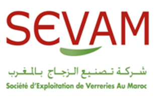

| Du 01/03/2017 au 01/07/2017 |
Ingénieur technico-commercial dans la société DMS. |
| Du 09/03/2016 au 09/07/2016 |
Projet: Etude et Déploiement de la solution SINGLERAN dans le réseau MEDITEL.
Missions: Etude de la solution SINGLERAN de HUAWEI.
Participation au déploiement de la solution SINGLERAN. Intégration de la MBTS et Mise en service les services 2G/3G/4G. |
| Du 01/07/2014 au 31/08/2014 |
Stage au sein de la société SEVAM à Casablanca, service « Réseau Informatique ».
Projet: Etude de l'installation et la configuration des points d'accès WIFI. |
| Du 01/07/2013 au 31/07/2013 |
Stage au sein de l'Office Régional de Mise en Valeur Agricole, service « Réseau Informatique ».
Projet: Création d'une application pour faciliter la saisie des données, leurs modifications et leurs suppressions avec visuel basic 8. |
| Réseau |
Certification CCNA: Routing and Switching.
Administration Services Windows Server 2012: Bureau à distance, DHCP, DNS, WINS, IIS, FTP, Active Directory.
Supervision réseau : NAGIOS, NMS Huawei U2000 |
| Sécurité |
ACL, Firewall (pfSense / ASA), VPN (site-site / remote access), IDS (SNORT / sax2). |
| VOIP |
SIP, Solution Libre Asterisk, Solution Cisco (CME). |
| Réseau haut débit |
MPLS : LDP Protocol, VPN. |
| Téléphonie |
RTC, RNIS, PABX, IPBX.td>
|
| Réseau cellulaire |
Déploiement des réseaux GSM, UMTS et LTE. |
| JAVA |
Programmation orientée objet, interfaces graphiques Swing et JDBC. |
| Logiciels |
Cisco Packet Tracer, GNS3, eNSP, OPNET, MATLAB. |